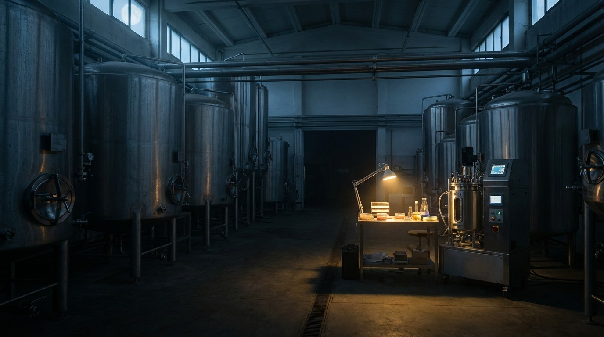

The Cultivated Meat Industry Burned $3 Billion and Produced Almost Nothing. The Survivors Spent $9 Million.
Investment collapsed 93%. Believer Meats had full FDA approval, a 200,000-square-foot factory, $390M raised — and produced zero commercial kilograms. Clever Carnivore raised $9M and hit $0.07/liter media cost. The math was always there. The money wasn't listening.

Divide $390 million by zero kilograms. You get an error, not a price. That is the final unit economics of Believer Meats, the Israeli cultivated meat company that raised more capital than any competitor, secured both FDA and USDA approval, built the world's largest cultivated meat factory at 200,000 square feet in Wilson, North Carolina, and then shut down in December 2025 without ever selling a single commercial product.
Four days later, Meatable, the Dutch startup that had raised $105 million and won a place on Time's Best Inventions of 2024, also ceased operations. Its former CEO, Jeff Tripician, offered a blunt postmortem: "Science has to mature. Then it has to scale. Even if the science works at the scale they're talking about, the price is ten times traditional protein."
He was right about the industry. He was wrong about the survivors.
A 93% Collapse
In 2021, investors put $989 million into cultivated meat companies. By 2025, that figure had fallen to $65 million. A 93% decline in four years. For context, the broader agrifood tech sector dropped 57% over the same period. Cultivated meat fell nearly twice as hard.
Follow the capital trajectory: $989M (2021), $807M (2022), $177M (2023), $55M (2024), $65M (2025). Each year looks like a rounding error on the one before it. Between 2021 and 2023, more than $2 billion flowed into the sector. What came out was a handful of regulatory approvals, two restaurant tastings in the United States, and a product in Singapore that is 97% plant-based with 3% cultivated chicken, priced at SGD $7.20 for 120 grams.
UPSIDE Foods, having raised $608 million, paused construction of its large-scale production facility and pivoted to a hybrid model at a smaller EPIC facility. Believer Meats owed $34 million to its construction contractor Gray Construction, which filed suit. Investor lawsuits and recriminations followed shutdown announcements across the sector.
The VC-Biotech Incompatibility Problem
Private equity and venture capital funds operate on 5-to-7-year return timelines. A partner who deploys capital in 2021 needs to show returns by 2026 or 2028 at the latest. Fund managers answer to limited partners who expect distributions on schedule.
Cultivated meat is deep biotech. Cell line development takes 2 to 3 years. Regulatory approval adds 1 to 3 more. Scaling from bench to pilot to commercial production takes another 3 to 5. Even in an optimistic scenario, the path from investment to commercial revenue spans 10 to 15 years. That is twice the VC cycle.
Between 2018 and 2022, the industry raised money as if it were building a software platform: fast scaling, winner-take-all dynamics, network effects. But cells in a bioreactor do not obey software economics. Doubling your bioreactor capacity does not halve your media cost. There are no zero-marginal-cost copies of a chicken breast. Every kilogram requires feedstock, energy, sterile processing, and quality control.
Companies that raised $100M to $600M deployed capital the way their investors expected: they built factories. Believer broke ground on 200,000 square feet. UPSIDE planned a facility that could produce "millions of pounds." But both companies were building packaging lines before proving they could produce at a price anyone would pay.
$0.07 Per Liter
In Chicago, a company called Clever Carnivore raised $9 million. No nine-figure fund. No flagship factory. Two 500-liter bioreactors in a lab.
Dr. Paul Burridge, the company's founder, told AgFunderNews that Clever Carnivore's cell growth media costs $0.07 per liter. Industry standard ranges from $1 to $10 per liter. That is a 14-to-143x cost advantage on the single largest input in cultivated meat production.
Media represents roughly 55% to 80% of total production costs at commercial scale. When your media costs $10 per liter, nothing else in the cost stack matters much. When it costs $0.07 per liter, everything changes. A 5,000-to-20,000-liter bioreactor batch moves from hypothetically interesting to commercially viable.
How did they get there? Clever Carnivore produces its own growth factors via microbial fermentation rather than purchasing pharmaceutical-grade recombinant proteins. Cell doubling time is under 14 hours. Cells are non-GMO porcine, which sidesteps the regulatory and consumer acceptance challenges of genetically modified cell lines. Their product is a 10% cultivated, 90% plant-based hybrid bratwurst, a pragmatic starting point that requires far less cell mass per unit than a whole-cut steak.
Burridge says a $4.5 million demonstration plant would be profitable in its first year of full production. A $4.5 million plant. Believer spent roughly 87 times that amount and produced nothing. UPSIDE spent 135 times that amount and paused its factory.
The Unit Economics Table
| Company | Total Raised | Media Cost ($/L) | Commercial Product | Effective $/kg |
|---|---|---|---|---|
| Believer Meats | $390M | Undisclosed | 0 kg | ∞ (division by zero) |
| Meatable | $105M | Undisclosed | 0 kg | ∞ (division by zero) |
| UPSIDE Foods | $608M | Undisclosed | ~0 (restaurant only) | Incalculable |
| GOOD Meat | ~$270M | Undisclosed | 3% blend, retail | Premium (~$27/lb) |
| Clever Carnivore | $9M | $0.07 | Pilot-scale | Path to $2-3/lb |
Conventional pork wholesales at $2 to $3 per pound. Clever Carnivore's technoeconomic analysis claims cost parity is achievable at their media pricing. If that analysis holds, the company that raised the least money has the clearest path to a product people might actually buy at a price they would actually pay.
Strongest Counterargument
Cultivated meat may be a technology looking for a problem that has already been solved. Conventional meat production feeds 8 billion people at $2 to $5 per pound. It works. Plant-based alternatives, which were supposed to be the wedge product, peaked in 2021 and have been declining since. Seven U.S. states have banned cultivated meat sales. No EU country has granted commercial approval. Even GOOD Meat's flagship retail product in Singapore is 97% plant-based, suggesting the cultivated component adds marketing value, not caloric substance.
If the best the industry can deliver after $3 billion in cumulative investment is a 3% blend at a premium, the strongest interpretation is not that the technology is early. It is that the technology is unnecessary. Consumers are not demanding lab-grown meat. Farmers are actively opposing it through legislative channels. Regulators outside Singapore and the U.S. have shown no urgency to approve it. A technology that requires $100 million to produce what a rancher produces for free from grass is not disruption. It is a hobby.
But the conventional meat industry's apparent stability masks structural pressures that do not appear on quarterly earnings statements. U.S. cattle inventory sits at its lowest level since 1961. UK beef production fell 5% in 2025 while consumption rose 1%. Feed costs, water scarcity, and labor shortages in meatpacking are structural constraints, not cyclical ones. None of these problems are solved by breeding more cattle. All of them are solved, in principle, by producing protein in a bioreactor.
Whether that principle matters depends entirely on cost. At $10/liter media, it does not. At $0.07/liter, the question shifts from whether cultivated meat can compete to how long the convergence takes.
Honest Limitations
Clever Carnivore's $0.07 per liter media cost is self-reported and has not been independently verified or published in a peer-reviewed study. Their technoeconomic analysis projecting profitability at a $4.5 million demo plant is exactly that: a projection. The plant has not been built.
Comparing a pilot operation running two 500-liter bioreactors to companies that attempted 200,000-square-foot factories ignores scaling challenges that emerge between those magnitudes. Media cost per liter at 500L does not guarantee the same cost at 20,000L. Contamination rates, cell viability, and process consistency all change with scale.
A 10% cultivated, 90% plant-based hybrid bratwurst is a much easier product to commercialize than a whole-cut chicken breast or steak. Clever Carnivore's path to market, while more practical, represents a narrower ambition than what the original cultivated meat thesis promised investors.
Media cost is one input. Bioreactor capital expenditure, energy consumption, sterile processing labor, cold chain logistics, and regulatory compliance all contribute to final cost. A breakthrough on one input does not guarantee viability on all of them.
Seven state-level bans on cultivated meat represent a political risk independent of any technical achievement. Even if Clever Carnivore hits its cost targets, it cannot sell product in Florida, Alabama, Arizona, Tennessee, Iowa, Kentucky, or Louisiana. Federal preemption of those bans is uncertain.
The Bottom Line
Between 2018 and 2025, the cultivated meat industry spent an estimated $3 billion cumulative proving that biology does not compress on venture capital timelines. Factories were built before unit economics were solved. Regulatory approvals were secured for products that were too expensive to manufacture. Companies achieved every milestone except the one that matters: producing meat someone could afford to eat.
Clever Carnivore's approach is not glamorous. A hybrid bratwurst from a $4.5 million plant in Chicago does not inspire the same TED Talk energy as a 200,000-square-foot bioreactor cathedral in North Carolina. But $0.07/liter media is the kind of number that turns a science project into a business. Believer Meats proved you could get FDA and USDA approval. Clever Carnivore is trying to prove you can get a customer. One of those accomplishments generates press releases. The other generates revenue.